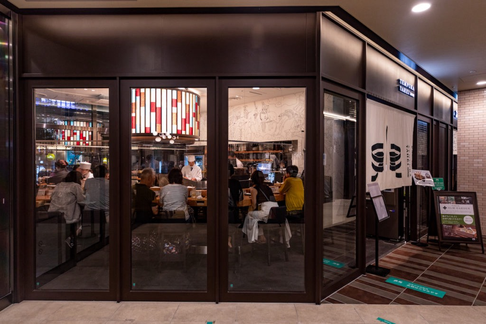
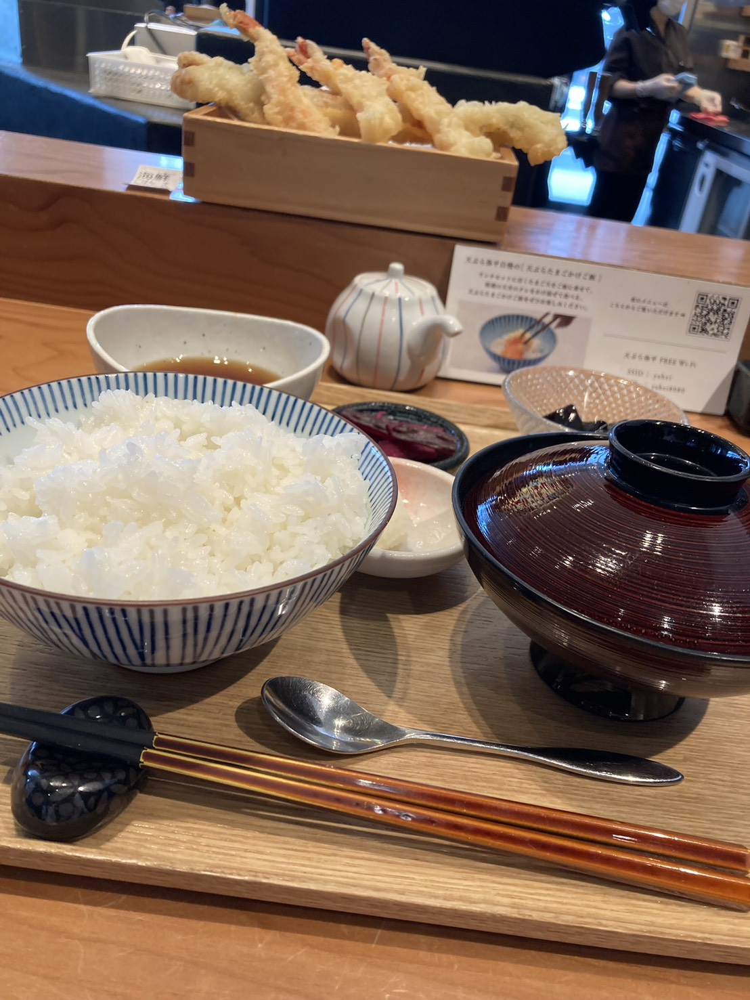

洗練された和の空間「TEMPURA YAHEI」
ガラス張りのおしゃれで落ち着いた店内で、極上のひとときを。ライブ感あふれる特等席のカウンターでは、心地よい油の音とともに、職人の見事な技を目の前で独り占めできます。

揚げたての本格天ぷらを堪能
旬の厳選食材を贅沢に使用し、サクッと軽やかに仕上げた揚げたての本格天ぷら。ふっくらツヤツヤのご飯と一緒に頬張れば、口いっぱいに至福の味わいが広がります。


ガラス張りのおしゃれで落ち着いた店内で、極上のひとときを。ライブ感あふれる特等席のカウンターでは、心地よい油の音とともに、職人の見事な技を目の前で独り占めできます。

旬の厳選食材を贅沢に使用し、サクッと軽やかに仕上げた揚げたての本格天ぷら。ふっくらツヤツヤのご飯と一緒に頬張れば、口いっぱいに至福の味わいが広がります。
